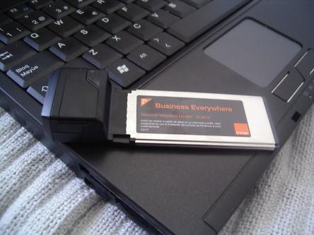
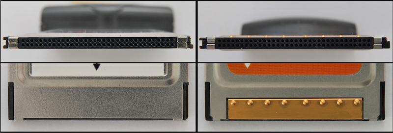
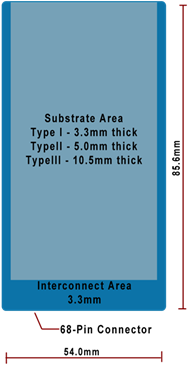
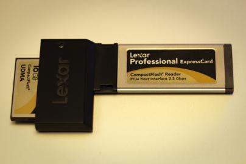
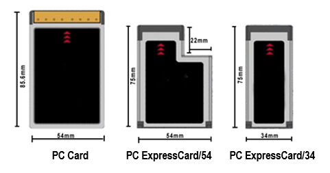
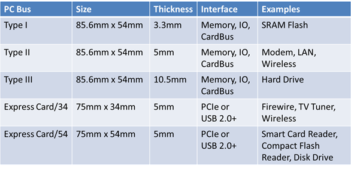

Notebook Features and Components 筆記本功能和組件 <<
Previous Next >> Notebook Features 筆記本功能
Installing and Configuring Laptop Hardware 安裝和配置筆記本電腦硬件
As a technician, you will be required to install and configure laptop hardware.
作為技術人員，您將需要安裝和配置筆記本電腦硬件。
PC laptop manufacturers publish specification manuals as well as a variety of service manuals online that can help you install and configure laptop hardware.
PC筆記本電腦製造商會在線發布規格手冊以及各種服務手冊，以幫助您安裝和配置筆記本電腦硬件。
Most include information from a complete system teardown to replacing a motherboard or CPU.
其中大多數信息包括從完整的系統拆卸到更換主板或CPU的信息。
Whenever you are working with laptop hardware, always check for the most complete up-to-date manual for anything more complicated than RAM, hard drives, or most wireless NIC cards.
每當使用筆記本電腦硬件時，請始終檢查最完整的最新手冊，以查找除RAM，硬盤驅動器或大多數無線NIC卡之外的任何復雜信息。
Also, always use safe handling and anti-static procedures when working on a computer.
此外，在計算機上工作時，請始終使用安全的處理方法和防靜電程序。
Expansion擴張
The first method that was developed to expand a laptop’s capabilities was the Personal Computer Memory Card International Association (PCMCIA) card.
擴展筆記本電腦功能的第一種方法是國際個人計算機存儲卡協會（PCMCIA）卡。
These cards were inserted into an expansion slot on the slide of the laptop and fit almost completely inside the casing of the machine.
這些卡已插入筆記本電腦滑軌上的擴展槽中，幾乎完全可以裝入計算機機箱內。
These cards originally came as PC cards (16-bit or 32-bit) or CardBus (32-bit) cards that fit into the associated slot.
這些卡最初是作為可插入相關插槽的PC卡（16位或32位）或CardBus（32位）卡來的。
These cards were hot-swappable, meaning that the card could be ejected or inserted while the computer was still powered on.
這些卡是可熱插拔的，這意味著可以在計算機仍打開電源時彈出或插入卡。
The idea of these cards was to provide a standard expansion port, similar to a PCI expansion slot on a traditional desktop computer.
這些卡的想法是提供一個標準擴展端口，類似於傳統台式計算機上的PCI擴展插槽。
These cards had 68 pins in a two-row connector.
這些卡在兩行連接器中有68個引腳。
These cards came in three types: type I, type II, and type III.
這些卡分為三種類型：I型，II型和III型。
Type I was used to provide additional memory and storage capabilities, but is now obsolete.
類型I曾用於提供其他內存和存儲功能，但現在已過時。
Type II was used to provide additional input/output connections (like FireWire or USB), a network interface card, modem, or other such external devices/connectivity.
類型II用於提供其他輸入/輸出連接（如FireWire或USB），網絡接口卡，調製解調器或其他此類外部設備/連接性。
Type II cards were only 5 mm thick, so they usually had to include a dongle to convert a flat proprietary connection to a standard connection like FireWire, RJ-45, or RJ-11.
II型卡只有5毫米厚，因此它們通常必須包含一個加密狗才能將扁平的專有連接轉換為FireWire，RJ-45或RJ-11等標準連接。
Type III was used as an upgraded version of the type II device and was thicker, reaching 10.5 mm in size, reducing or eliminating the need for a dongle.
III型用作II型設備的升級版，它更厚，達到10.5毫米，從而減少或消除了對加密狗的需求。
Cardbus, an improvement to the PC card, was a full 32-bit expansion card system and operated very similarly to the PC card.
Cardbus是PC卡的改進，它是一個完整的32位擴展卡系統，其操作與PC卡非常相似。
The CardBus was easily identified by looking at the edge of the expansion card, since it contained a golden edge where the connectors were.
通過查看擴展卡的邊緣，可以輕鬆識別CardBus，因為它包含連接器所在的金色邊緣。
The card in the first image below has a black edge, and is a PC card, not a CardBus.
下圖第一張圖中的卡具有黑色邊緣，是PC卡，而不是CardBus。

PC card. Photo used under CC-BY-NC-ND license from Javier Leiva.
PC卡。圖片由Javier Leiva根據CC-BY-NC-ND許可使用。

End-view of a PC card (left) and a CardBus (right). Photo used under CC-BY-SA license from Wikimedia Commons.
PC卡（左）和CardBus（右）的端視圖。由Wikimedia Commons以CC-BY-SA許可使用的照片。

Type I, type II, and type III PCMCIA cards. Figure used under CC-BY license from National Information, Security, Geospatial Technologies Consortium.
I型，II型和III型PCMCIA卡。根據國家信息，安全，地理空間技術聯盟的CC-BY許可使用的圖。
ExpressCard is a type of laptop expansion card that replaced PC cards and PCMCIA cards.
ExpressCard是筆記本電腦擴展卡的一種，代替PC卡和PCMCIA卡。
Internally, the ExpressCard slots support both PCI Express and USB 2.0 connectivity and each card uses whichever standard to connect to the motherboard that the card designer believes is most appropriate for the card’s intended use.
在內部，ExpressCard插槽同時支持PCI Express和USB 2.0連接，並且每個卡都使用卡設計者認為最適合卡預期用途的任何標準連接到主板。
ExpressCard is hot-swappable, just like PC cards and PCMCIA cards. ExpressCard supports two form factors: the ExpressCard 34 (which is 34 mm wide) and ExpressCard 54 (which is 54 mm wide and shaped like an L).
ExpressCard可熱插拔，就像PC卡和PCMCIA卡一樣。ExpressCard支持兩種尺寸：ExpressCard 34（寬度為34毫米）和ExpressCard 54（寬度為54毫米，形狀像L形）。
Regardless of which ExpressCard you are using, the connector inside the laptop is the same on both versions (34 mm), but the exterior portion can be either 34 mm or 54 mm.
無論使用哪種ExpressCard，筆記本電腦內部的連接器在兩個版本上都是相同的（34 mm），但是外部可以是34 mm或54 mm。
The ExpressCard slots are slightly shorter in length than a PCMCIA card, but are the same thickness at 5 mm.
ExpressCard插槽的長度略短於PCMCIA卡，但在5毫米處厚度相同。The ExpressCard 34 can fit in either an ExpressCard 34 slot or an ExpressCard 54 slot.
ExpressCard 34可以安裝在ExpressCard 34插槽或ExpressCard 54插槽中。
The ExpressCard 54 can only fit into an ExpressCard 54 slot, though. 但是，ExpressCard 54只能裝入ExpressCard 54插槽中。
As of 2016, it appears that all manufacturers have eliminated expansion cards in favor of eSata, USB, and Thunderbolt2 ports for laptop expandability.
截至2016年，似乎所有製造商都已經淘汰了擴展卡，而採用eSata，USB和Thunderbolt2端口來實現筆記本電腦的可擴展性。ExpressCards are still available in aftermarket sales, but the technology is soon to be deprecated as PCMCIA is now.
ExpressCard仍可在售後市場中購買，但是隨著PCMCIA的出現，該技術很快就會被棄用。

ExpressCard 34. Photo used under CC-BY-NC license from Jim.
ExpressCard 34. Jim根據CC-BY-NC許可使用的照片。

PCMCIA and ExpressCard dimensions. Image used under CC-BY license from National Information, Security, Geospatial Technologies Consortium.
PCMCIA和ExpressCard尺寸。國家信息，安全，地理空間技術聯盟在CC-BY許可下使用的圖像。

Laptop expansion slot technologies. Figure used under CC-BY license from National Information, Security, Geospatial Technologies Consortium.
筆記本電腦擴展插槽技術。根據國家信息，安全，地理空間技術聯盟的CC-BY許可使用的圖。
Another way to provide expansion to your laptop is by using its USB ports.
擴展筆記本電腦的另一種方法是使用其USB端口。
Expanding a laptop in this manner is the same as providing external devices to a desktop computer.
以這種方式擴展筆記本電腦與為台式計算機提供外部設備相同。
As with desktop computers, manufacturers have consolidated expansion ports and card slots in favor of the faster and more universal USB and Thunderbolt expansion ports.
與台式計算機一樣，製造商整合了擴展端口和卡插槽，以支持更快，更通用的USB和Thunderbolt擴展端口。
Expanding a laptop in this manner is the same as providing external devices to a desktop computer.
以這種方式擴展筆記本電腦與為台式計算機提供外部設備相同。
Usually, the biggest issue is that a laptop has many fewer USB ports than a desktop equivalent machine.
通常，最大的問題是筆記本電腦的USB端口要少於台式機。
Also, the laptop USB ports tend to not provide as much power for the devices connected.
同樣，筆記本電腦的USB端口往往無法為連接的設備提供足夠的電源。
So, if you are using a device that requires more power, such as an external DVD drive or external hard drive, you should use a Y-cable that allows a single USB port from your device to connect to two USB ports on the laptop.
因此，如果您使用的是需要更多功率的設備，例如外部DVD驅動器或外部硬盤驅動器，您應該使用Y型電纜，該電纜允許設備上的單個USB端口連接到筆記本電腦上的兩個USB端口。
One of these ports provides power and data, while the other port provides power only.
這些端口中的一個提供電源和數據，而另一個端口僅提供電源。
Some laptops, and especially netbooks, come with very limited internal storage space
. 一些筆記本電腦，尤其是上網本，內部存儲空間非常有限。
Many laptops now come with an SD card or memory card expansion slot to provide the user with the ability to increase the storage space. 現在，許多筆記本電腦都帶有SD卡或存儲卡擴展槽，以使用戶能夠增加存儲空間
This is rather common in netbooks that come with a small solid state device (SSD).。
這在帶有小型固態設備（SSD）的上網本中非常普遍。
Other laptops instead incorporate a multi-card reader to allow the user to read and write to numerous types of flash memory cards, like those used in digital cameras.
相反，其他便攜式計算機包含多卡讀取器，以允許用戶讀寫多種類型的閃存卡，例如數碼相機中使用的閃存卡。
Other laptops don’t provide this type of integrated reader.其他筆記本電腦不提供此類集成閱讀器。
So ,if you need this capability, an external USB model can be used instead.
因此，如果需要此功能，則可以使用外部USB型號。
Thunderbolt is an interface that takes advantage of both the PCIe interface combined with the Mini DisplayPort connector resulting in being able to transfer both both video and audio, as well as data.
Thunderbolt是一種接口，該接口同時利用了PCIe接口和Mini DisplayPort連接器，從而能夠同時傳輸視頻和音頻以及數據。
The table below lists the versions and data rates of the Thunderbolt expansion port.
下表列出了Thunderbolt擴展端口的版本和數據速率。第3版於2015年12月發布，並使用USB C型連接器。
Version 3 was released in December 2015 and uses a USB Type C connector.
|
Version 1
|
10 Gb/s
|
DisplayPort
|
|
Version 2
|
20 Gb/s
|
DisplayPort
|
|
Version 3
|
40 Gb/s
|
USB Type C
|
|
版本1
|
10 Gb /秒
|
顯示端口
|
|
版本2
|
20 Gb /秒
|
顯示端口
|
|
版本3
|
40 Gb /秒
|
USB Type C
|
Notebook Features and Components 筆記本功能和組件 <<
Previous Next >> Notebook Features 筆記本功能